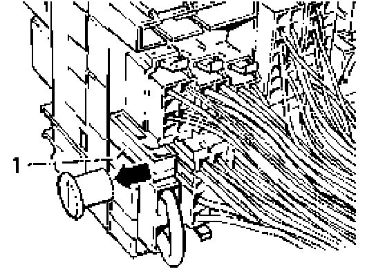
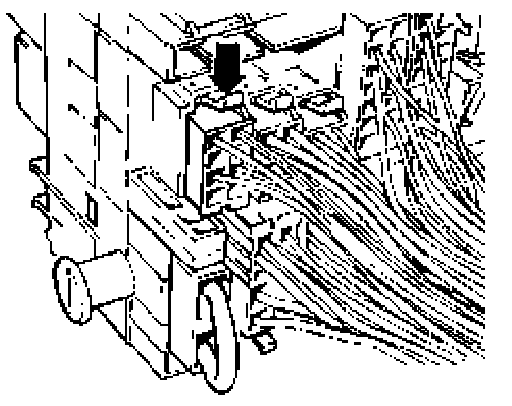
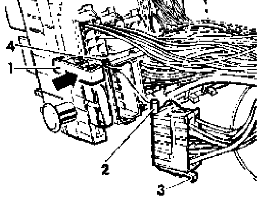

Multi-Pin Plug Behind Relay Plate, Removing and Installing
Multi-point connectors on fuseirelay panel, removing and installing
Removing

- Pull open locking slide -1 - on back of fuse/relay panel in direction indicated (arrow).

- Depress locking clip (arrow) and pull multi-point connector from fuse/relay panel.
Installing

- Insert connectors so that locking pins -2- face locking slide -1-.
- Push multi-point connector into appropriate location -4- until locking clip -3- engages.
- When all connectors are installed, push lock slide -1- in direction indicated (arrow) until locked.
Note: Fully insert all multi-point connectors into fuse/ panel before engaging locking slide -1-.